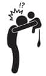

Cooorrttttt! Bez getir…
Şu çok tuhaf: Bebek çiş ve kaka yaptığı zaman anne baba mutlu oluyor. Yapmıyorsa sıkıntı tabii. Karnı ağrır, mızıklar, ağlar, çığlık atar, uyumaz, ıkınır sıkınır ve sana dünya kaç bucakmış gösterir. O yüzden ne kadar çok yapıyorsa o yeşil şeyden, o kadar kârdasın demektir. Fakaaat bu arkadaşların popo temizliği hassasiyet gerektirir. Önden arkaya doğru bir koordinat izleyeceksiniz. Kakalar ön bölgeye bulaşmasın diye. Ama bebekler bu işi o kadar tazyikli yapıyorlar ki, zaten göbeklerine kadar batırıyorlar. Ben önden arkaya doğru temizlesem kaç yazar.
Bebek bezi… Bu nedir yahu, nasıl bir icattır! Elime her bebek bezi aldığımda kendi annelerimizi düşünüyorum. Bebek bezi yok, üstelik belki yıkayacak makine de yok. Ne eziyet… Bebek bezinin en pahalısı en iyisidir diye düşünme. Mesele bebeğin poposu ile uyumlu bezi bulabilmekte. Bazen en iyi markalar pişik yapabiliyor, bazen daha alt segment bir marka bebeği mutlu ediyor. Deneyip göreceksin.
Bebek bezinden sonra en mucizevi buluş, ıslak mendil. Çok sağlıklı değil ama inanılmaz pratik, annelerin en büyük yardımcısı. Onlar popo silelim diye üretmişler ama çocuğun elini ağzını silersin, yere dökülen ve kırıklanmış balık krakerleri en güzel onunla toplarsın, koltuktaki lekeleri silersin, oyuncakları temizlersin, apar topar toz alırsın. Pis işlerin adamı… Yenidoğanlar için özel ıslak mendiller var, içinde sadece saf pamuk ve su var. Fakat diğer ürünlere göre biraz daha fiyatlılar. Hastaneden taburcu olurken genelde pamuk ve saf su kullanmanızı söylüyorlar. Yani avcuna bir miktar pamuk alıp ıslatacak ve onunla sileceksin. Akıl işi değil, o yeşil şey o pamukla asla temizlenmiyor. Hadi başardın temizledin diyelim, dışarı çıkarken de çantana bir kutu pamuk, bir pet şişe su koyar, onunla temizlersin artık.
Bana uymaz… O yüzden saf pamuk ve sudan müteşekkil ıslak mendillerden kullandım. Biraz daha büyüdüklerinde normal ıslak mendillere döndüm. Buradaki püf noktası şu: Alkol, paraben ve parfüm içermeyenlerden olacak.
En iyi temizleme yöntemi; yıkamak. Banyoya sokmak çok pratik değil ama banyodaki lavabonun altında ılık suya tutuvermek en güzel çözüm. Bebek rahatlıyor ve temizliğinden emin olmuş oluyorsun. Eğer evdeyseniz, kaka yaptığı zamanlarda en iyi çözüm bu.
Gelelim pişik kremlerine… Bunların bir önleyicileri var, bir de onarıcıları. Bize doktorumuz pişik kremi yerine saf zeytinyağı önermişti. Pişik için çok etkilidir demişti. Saf zeytinyağını bir cezve yardımıyla ısıtıyorsun, soğuyunca bebeğin poposuna uyguluyorsun. Etrafa bulaşıyor tabii. Sonra şöyle bir çözüm buldum: Kozmetik marketlerde satılan boş sprey şişeleri var. Onlardan alıp zeytinyağını içine doldurdum. Altını alırken elimi değdirmeden sıkıp kapatıyordum. Kabul et, iyi fikir. (Zeytinyağını kakasını yapamayan çocuklar için de öneriyorlar. Arada mamasının içine bir çay kaşığı koyup mamayı öyle veriyorsun. O da olmadı kulak çubuğu yardımıyla poposuna bir miktar sürüyorsun. Anadolu’da zeytinyağını ısıtıp pamukla bebeğin karnına sürüp sıcak havlu koyuyorlar. Bu da yardım ediyormuş.)
Pişik önleyici krem ve pişik kremi kullandığım zamanlar da oldu. Bir bez atlayarak uyguladım. Altını bir açtığımda sürmediysem, diğerinde sürdüm.
Uygun bezi bulmana, iyi temizlemene ve pişik önleyici kullanmana rağmen bebek; ishal olduğunda, antibiyotik kullandığında, anne sütünden geçen bazı besinler dolayısıyla ya da kendi yediği bazı yiyecekler dolayısıyla pişik olabilir. (Mesela Mete karpuzu çok seviyor, ama karpuz pişik yapıyor.) İşte o zaman doktora sor, daha etkili kremler öneriyorlar.
Benim bildiğim, bu bebek bezi, ıslak mendil, pişik kremi üçlüsünün yanında bir de pudra bulunurdu, meğer artık bulunmuyormuş. Suyu emerek içinde tuttuğu için ciltteki nemi de hapsederek pişiği artırıyormuş. Hadi, bir yaşımıza daha girdik!
Oooooo, dur, dur, müthiş bir icattan bahsedeceğim. Bebek bezlerini atmak için çöp kovası! Bebek bezleri için üretilmiş olan çöp kovalarına “yılın özel ürünü” ödülünü gönderiyorum. Bebek alışverişine çıktığımızda eşim bu ürünü çok gereksiz bulmuştu ve o zaman almamıştık.
Sonra baktık ki, çocuklar sürekli kaka ve çiş yapıyorlar. Elimizden bebek bezi düşmüyor. Bu bebek bezlerini banyodaki çöp kovasına atmayı denedik önce. Birkaç saat içinde, özellikle yaz aylarında sıcağın da etkisiyle, banyodan koku dumanları yükselmeye başladı. Balkonda biriktirip akşam çöpe atmayı denedik, o da olmadı. Sonunda bu kovalardan aldık. Bütün bir günün bebek bezini bu kovanın içinde biriktirebiliyoruz, akşam olduğunda da poşeti çıkartıp bir elimizle burnumuzu tıkayıp diğer elimizle çöpü atıyoruz. Bizim evde çocukların üçü de bez kullandığı için kova bir günde doluyor, ancak tek çocuğu olup da iki üç günde bir kovayı boşalttığını söyleyenler var. Bu durum, günde ortalama 30 bezin tüketildiği bizim evimizde, bir rivayetten ibaret.